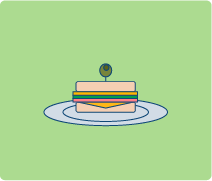

One of the most interesting of all studies is the study of words and word origins. Each
language is composed of several earlier languages. The words of a language can often
be traced back through two or three different languages to their origins. A word from
one language may pass into other languages and develop a new meaning.
The word “etiquette,” which is of French origin meant a label or a
sign. It passed into the Spanish language and kept its original meaning.
In Spanish the word “etiqueta” today is used to indicate the small tags,
which a store attaches to a suit, a dress, or a bottle. In France it became
a custom to write directions on small cards or “etiquettes” in order to
guide visitors on how they should dress or act during an important
ceremony at court. Thus, the word “etiquette” began to indicate a
system of correct manners for people to follow. With this meaning, the
word passed into English.
Consider the word “breakfast.” It originated from the custom of a
period of fasting without eating. Thus, in the morning, after many
hours during the night without food, one “breaks his fast.”
Another example is the everyday English expression “goodbye.” Many, many years
ago, when people would go their separate ways, they would say: “God be with you.”
As this expression was repeated over and over millions of times, it gradually became
shortened to “goodbye.”
The word “sandwich” is an English word used today
in many other languages. This word has its origin from
a man named The Earl of Sandwich who liked to play
cards. He played for money all day and night.
One time when he was with some of his friends, he played for twenty-four hours without
stopping and his servants brought him some meat and bread, and since he did not want
to stop playing cards, he put the meat between two pieces of bread, and the sandwich
was born.